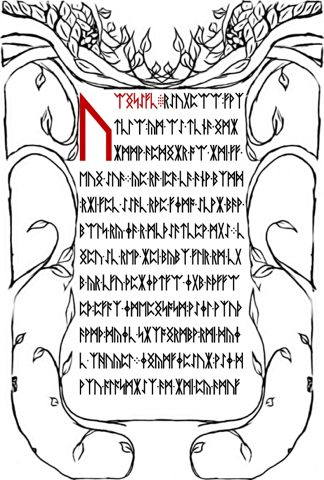

Pilgrimage, selfhood, and the Welcome
Follow the Welcome across LP1-03–04: loss of certainty, inward travel, emergence, and the tension between ending and commanding the self.
On this page
The Welcome addresses its reader as a pilgrim. Across LP1-03 and LP1-04, the journey becomes an account of losing certainty, reshaping reality and turning inward. This guide follows that movement within the known reading. It does not identify a particular religious pilgrimage or an undisclosed destination.
Read the two pages together


The page break is not the end of the argument. The first page ends with the literal labels AN-END-TO-SELF; the next begins by describing what the pilgrimage shapes. Use the complete Welcome for both literal page readings and the contextual English.
How the journey changes meaning
| Movement in the passage | What to notice |
|---|---|
| Arrival and invitation | The reader has found a place, but is addressed as someone beginning a difficult journey. |
| Losses along the way | Relief from struggle and suffering appears in the same list as the loss of innocence, illusions, certainty and reality. |
| The page break | An end to self is followed by a claim that the journey shapes ourselves and our realities. |
| Inward movement | Going within is presented as the route to arriving outside and emerging. |
| Closing instruction | The reader is addressed as an independent being and intelligence, then told to command the self. |
The list of losses prevents a simple reading in which the journey only removes unpleasant experiences. It also removes things on which a person might rely when understanding the world. The following page describes formation as well as loss. Read together, these moves support an interpretation of pilgrimage as a transformation in how the self understands itself and reality.
Ending the self and commanding it
The Welcome does not finish at the claim about an end to self. It later addresses the reader as a being and a law unto themselves, affirms intelligence and life, and ends with self-command. Those statements should be read alongside the earlier loss, rather than silently dropping either side.
One interpretation distinguishes an identity that can be relinquished from the capacity to act or direct oneself. The text does not define two technical kinds of self, however. That distinction is a way to read the tension, not another sentence recovered from the runes. Compare the second koan’s inner voice, where a thought about the absence of a voice becomes an example of that voice.
Why the instar belongs here
The instar comparison links inward travel with emergence. An instar is a stage between molts; the guide explains how a stage differs from shedding and from the discarded covering. The Welcome uses this biological setting as an analogy, without specifying a species or developmental timetable.
The final parable returns to the instar, inward divinity and emergence, adding the shedding of circumferences. This repeated language connects the passages. It does not by itself settle the identity of the pictured insect or prescribe a cipher operation.
Check the reading before interpreting it
python scripts/reproduce_reading.py welcome
python scripts/reproduce_reading.py welcome --traceRun these from the extracted reference-data bundle or repository with Python 3. The recorded Vigenère transformation continues across the two pages, with specified interruptions. The method section gives the key and exact counting rule. The trace exposes the transformations; it does not adjudicate a philosophical interpretation.
Preserve literal spellings and line wraps for arithmetic. For example, the word rendered contextually as pilgrimage is split across a line boundary on LP1-04. Contextual English helps reading, while literal labels and runes supply the inputs for sequence comparisons.
Sources and connected passages
This is an editorial close reading of the compiled known readings, checked against the two literal page exports. For an external textual comparison in the Welcome’s closing passage, see Blake and the statement about life being holy. That verbal parallel does not establish the source of the entire journey narrative. Continue with the philosophical reading route and circumference and identity.